Overview

This robot balances a ping pong ball on a platform. It utilizes a webcam mounted above the ball and OpenCV to determine the position of the ball. This information is then sent over serial to an Arduino Nano on the robot where two PID loops are run (one for x and one for y). The microcontroller then uses the output of these PID controllers to drive the servo motors with a PCA9685 servo driver. All of the software for this project was written in C++.

The majority of this project was completed in August 2021. The entirety of the software, namely the PID controller and vision processing, was written in Python and computed on a Raspberry Pi 3A+. Upon testing the near-complete robot, it was concluded that the capture speed of the PiCamera was too slow for the update speed needed the keep the ball balanced. The project was pushed aside until June 2022 when the software was entirely rewritten in C++ to utilize a webcam in order to achieve significantly higher refresh rates.
Build Process
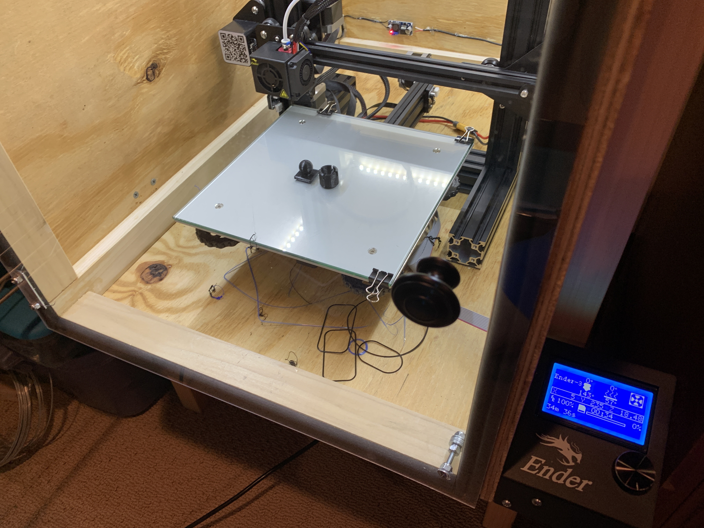Testing a custom ball and socket joint for the platform to pivot on. The was definitely the first attempt.
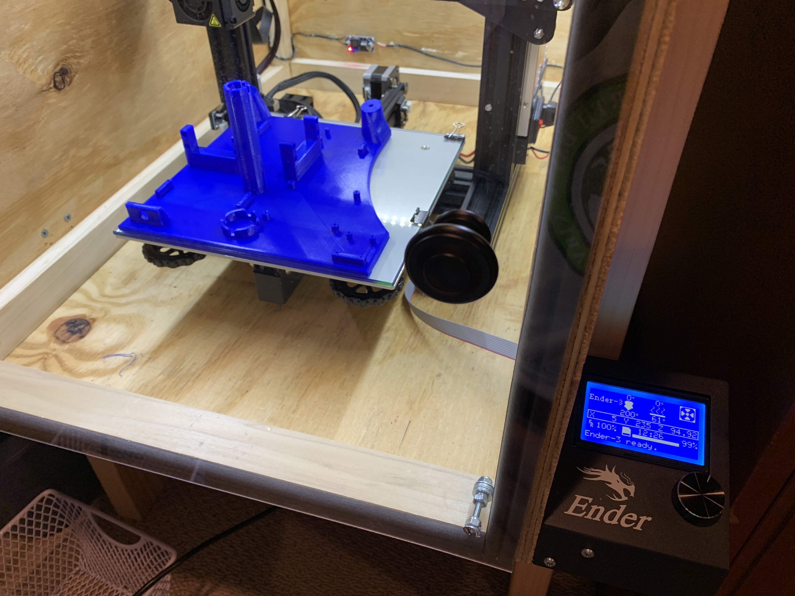3D Printing the base of the robot
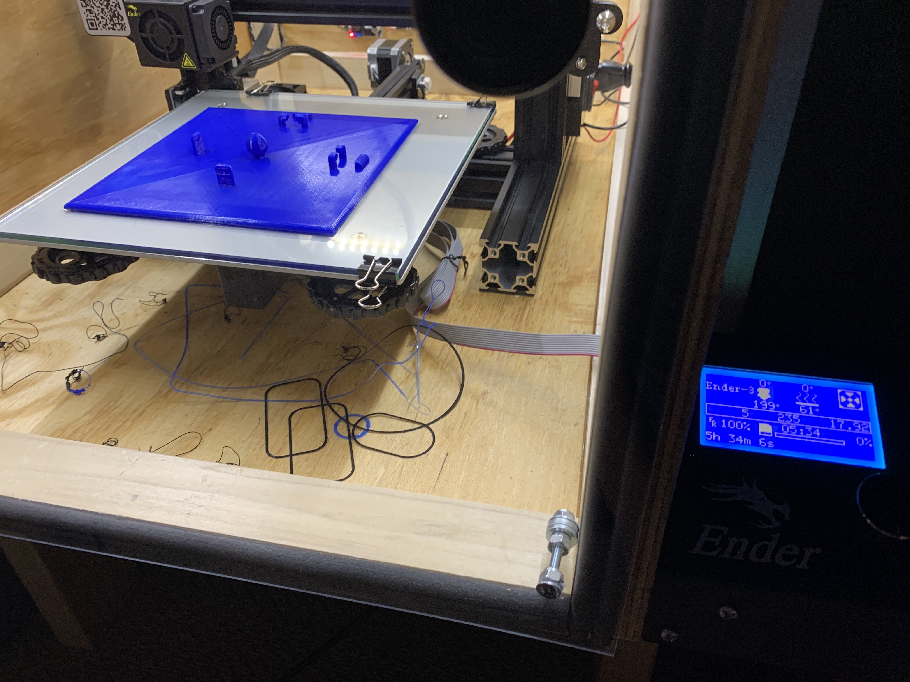3D printing the platform
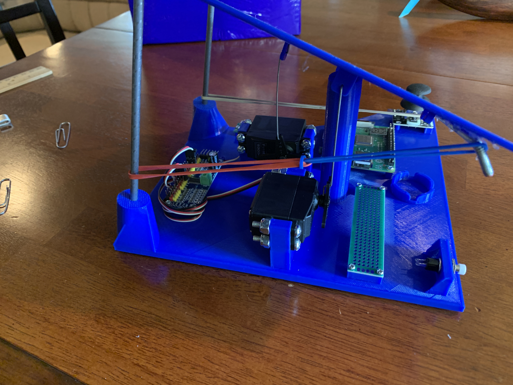Mocking up the electronics
The plan for the robot was to have three modes, switched by the white push button. The first mode balanced the ball in the center, the next mode moved the ball in a circle by continuously changing the setpoint, and the third mode would allow the user to change the setpoint with a joystick. These modes were indicated by the red, green, and blue LEDs on the robot. Due to the Pi 3A+’s lack of analog inputs, I used a MCP3008 ADC to interface with the joystick.
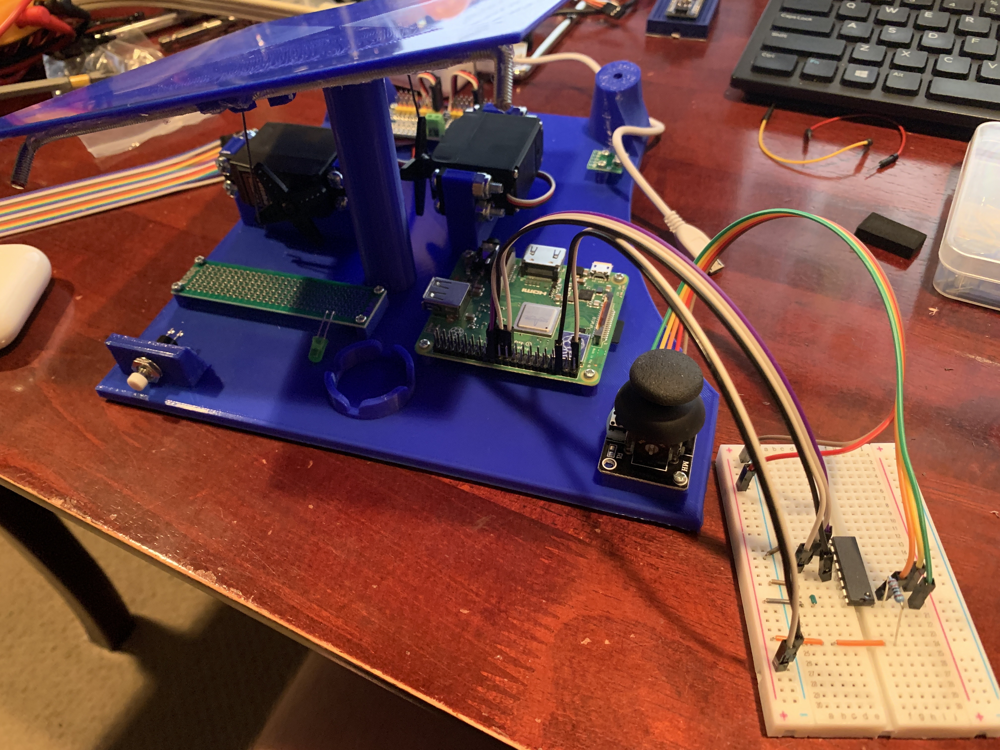Prototyping with MCP3008
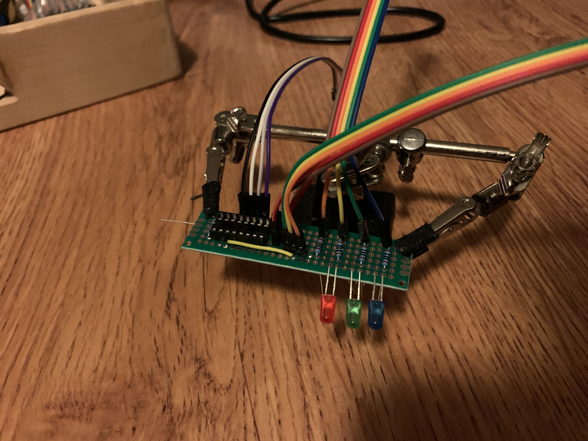Mock-up of circuit board layout
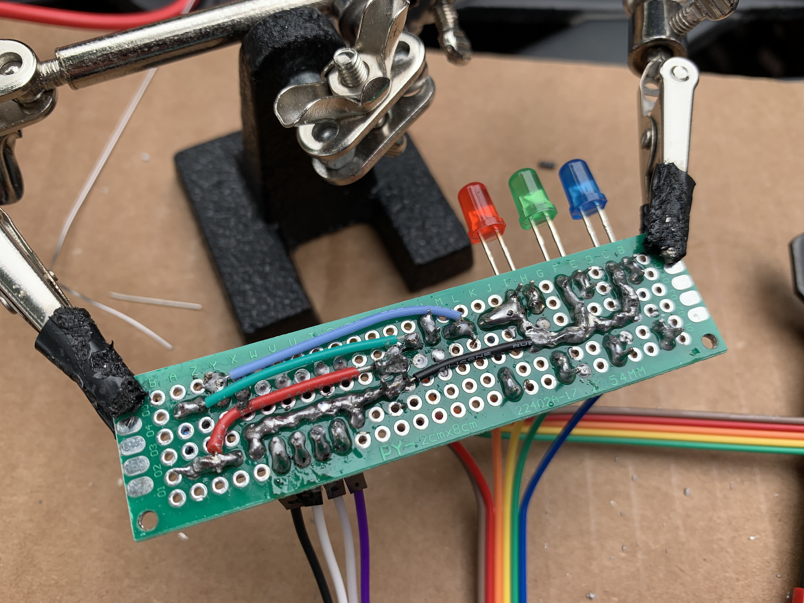Soldered board
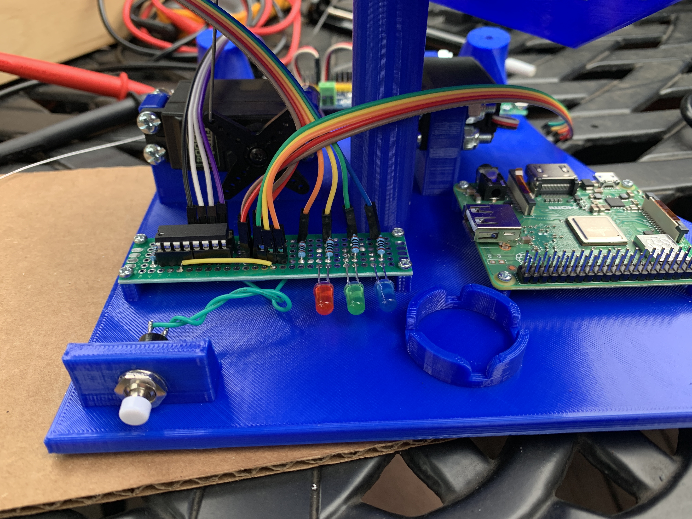Near-complete electronics
Testing servo control. The rubber bands serve to keep the platform square.
Testing solder job
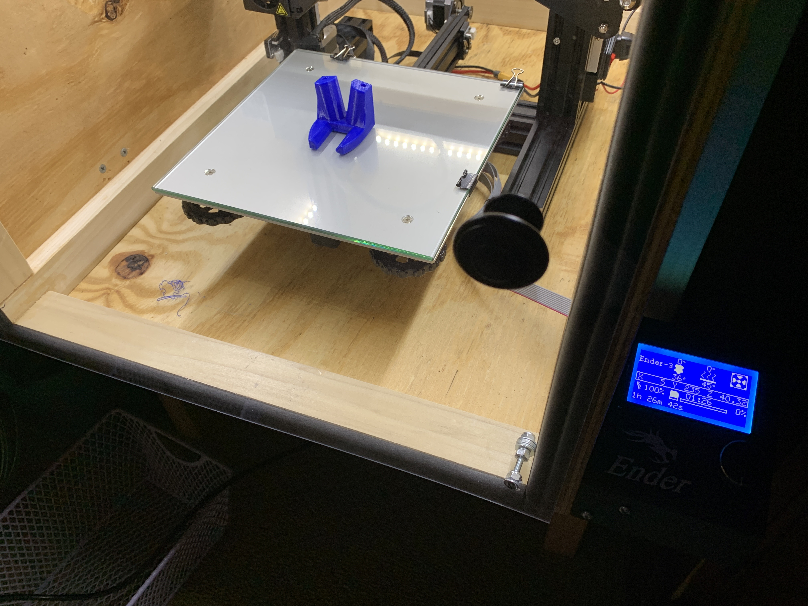3D printing PiCamera mount. This is held above the platform by two steel rods.
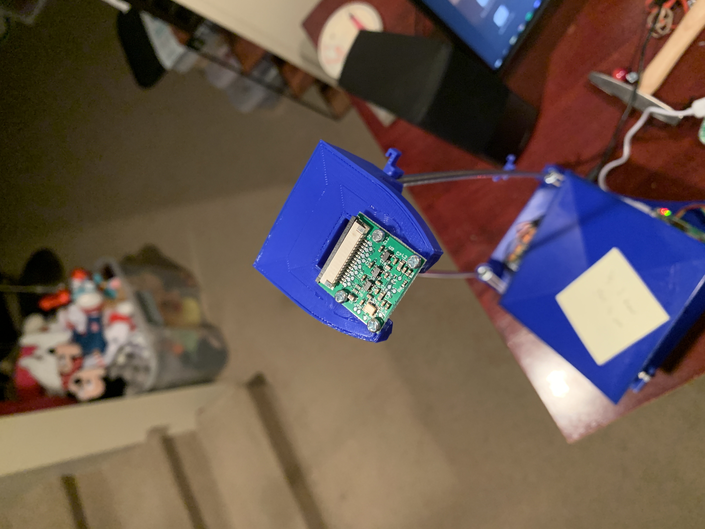Mounting PiCamera
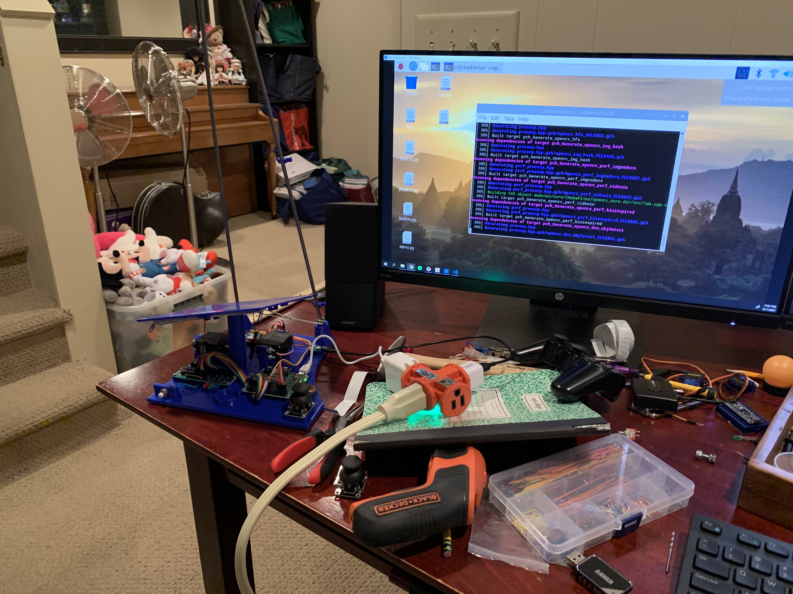Installing OpenCV on the Raspberry Pi and the subsequent realization of the less-than-optimal execution speed of the entire Python program (though for this I mainly blame the capture time of the PiCamera)
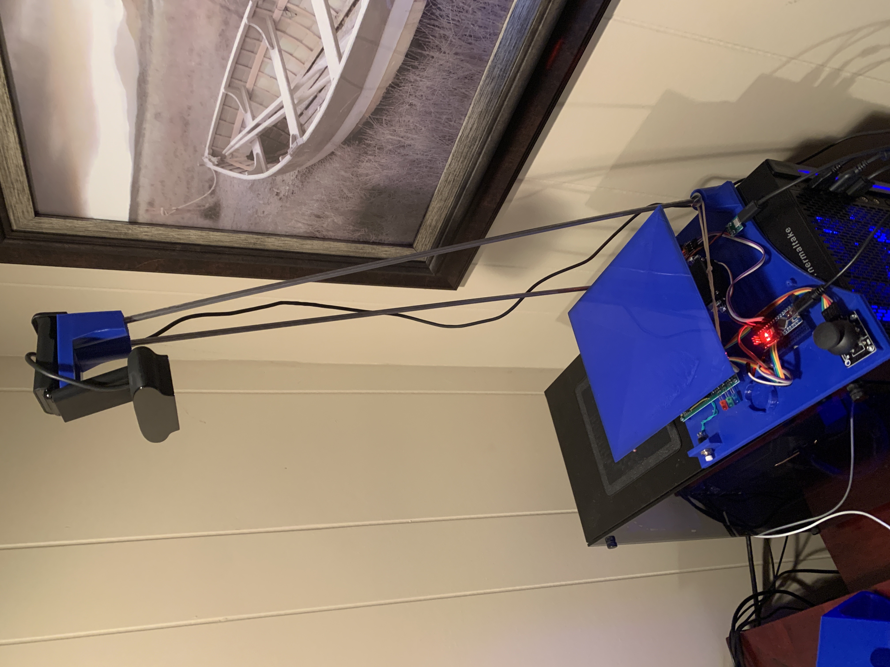Many months later… Pi is replaced by Arduino and vision processing transitioned to PC with USB webcam.
Final product after rewriting software and inadequately tuning PID loop